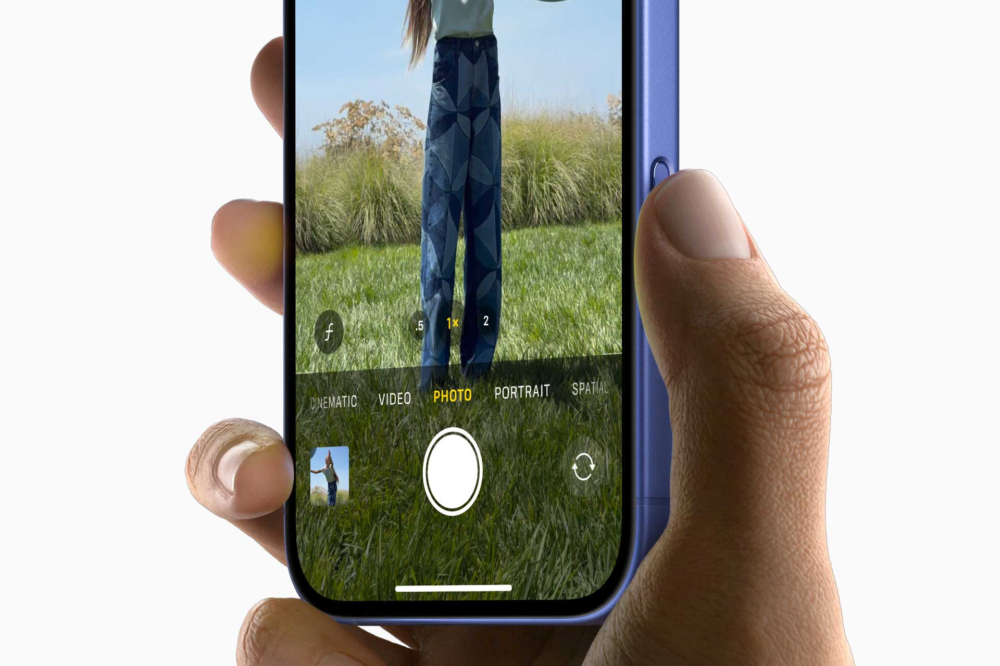

Apple pourrait donner à l’iPad le bouton le plus clivant de l’iPhone

🛒 En lien avec cet article
Publicité — Liens de partenariat Amazon : une commission peut être reversée, sans surcoût pour vous.
🔥 Top produits tech du moment
Publicité — Liens de partenariat Amazon : une commission peut être reversée, sans surcoût pour vous.
Les géants de la tech concentrent une part croissante de l'innovation mondiale. Leurs annonces ont un impact direct sur les utilisateurs, les développeurs et l'ensemble du secteur.
Ce qu'il faut retenir
Un brevet récemment accordé à Apple détaille un bouton Camera Control conçu pour l'iPad, reprenant à l'identique le mécanisme de détection de pression et de balayage introduit avec l'iPhone 16.
Seuils de force précis, retour haptique, double capteur de contrainte : le document ne laisse planer aucun doute sur la technologie visée, sans toutefois confirmer une intégration future ni de calendrier de lancement.
Pourquoi c'est important
Cette information conforte la position des grands groupes de la tech dans l'économie mondiale. Elle concerne directement les utilisateurs de technologies numériques et mérite d'être suivie de près dans les prochaines semaines. Apple pourrait donner à l’iPad le bouton le plus clivant de l’iPhone est ainsi un signal à prendre en compte pour comprendre les évolutions du secteur.
En résumé
Retenez l'essentiel : Apple pourrait donner à l’iPad le bouton le plus clivant de l’iPhone. Cette actualité a été rapportée par 01net. Nous continuerons de suivre ce sujet et de vous tenir informés des prochaines évolutions.
Source : 01net